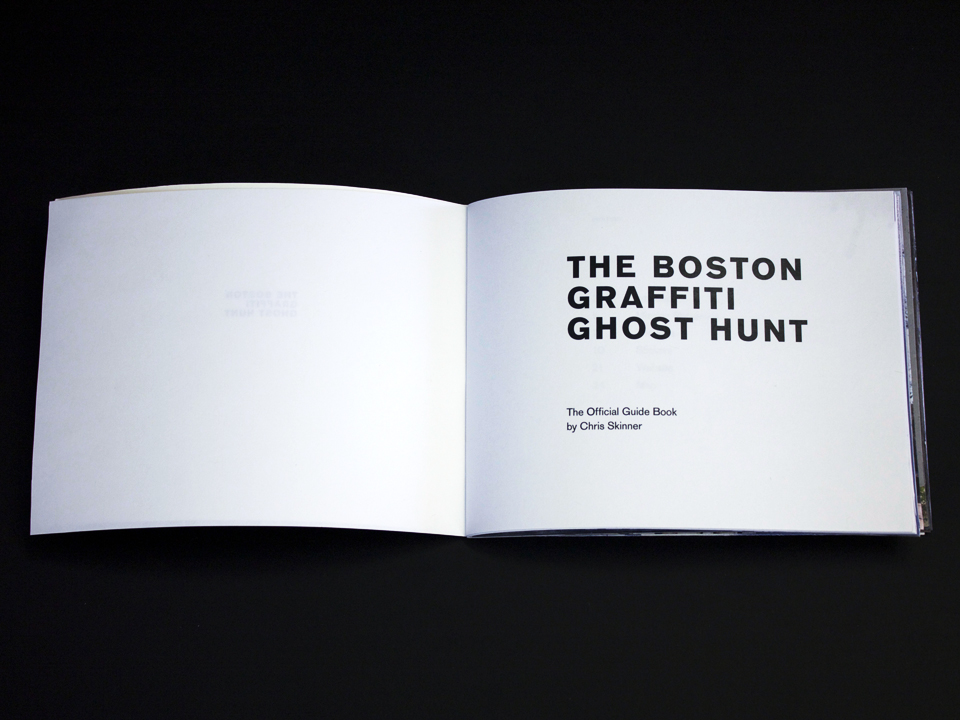

Boston Graffiti Ghost Hunt (otherwise BGGH) is an installation and interactive web site that tells the story of graffiti in the city of Boston and commemorates pieces of influential art which no longer exist. Fellow writers can learn more about the area and contribute more documentation to the history. The book showcases ten stickers and where they are located. The stickers are placed where influential pieces of graffiti once were commemorating the artist or crew.

With the BGGH website, visitors can find the location of the official stickers as well as upload their own photo evidence of past pieces. This way the history of graffiti in Boston can continue to expand.